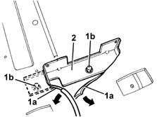

7065C39 refrigerator unit mount r r with refrigerator unit removed
- Path
- Procedures > 70 FITTINGS > 7065 SEAT BELTS AND ACCESSORIES > 7065C ACCESSORIES AND DECORATIONS > 7065C39 refrigerator unit mount r r with refrigerator unit removed
- Kind
- repair procedure (removal / refitting; the operation number is the code)
- Applies to
- all engines; all production periods
- Interactive page
- https://sloeber94.github.io/elrnDB-fMltpl/en/#/2892289
Applies to: all engines; all production periods
 Removing
Removing
 Refitting
Refitting7065C40 refrigerator unit - r r
5010C44 air diffuser to rear seat - r+r
1. Move the carpet (1a) and undo the bolts (1b).
2. Remove the bracket.

Applies to: all engines; all production periods
Refitting
RemovingCheck that the fridge bracket is not damaged.
Position the bracket and fix it using the bolts.